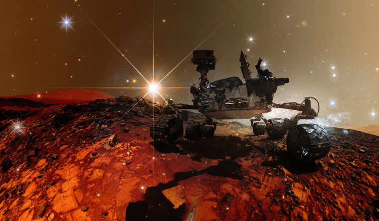

Exploring Mars with Curiosity and Perseverance
NASA’s Mars Rover Program has revolutionized our understanding of the Red Planet. From the early missions like Spirit and Opportunity to the latest, cutting-edge Perseverance rover, each robotic explorer has pushed the boundaries of technology and human curiosity.
Curiosity Rover
Launched in 2011 and landing in Gale Crater in August 2012, Curiosity’s mission was to determine whether Mars ever had the right environmental conditions to support microbial life.
Perseverance Rover
Perseverance landed in February 2021 with advanced instruments designed to collect and store rock samples for future return to Earth.
Rover Comparison Table
| Feature | Curiosity | Perseverance |
|---|---|---|
| Launch Year | 2011 | 2020 |
| Landing Site | Gale Crater | Jezero Crater |
| Main Objective | Assess habitability | Search for signs of life |
Mission Milestones
2011: Curiosity Launch
The Mars Science Laboratory (MSL) mission launches carrying the Curiosity rover.
2012: Curiosity Landing
Curiosity successfully lands using a complex "Sky Crane" maneuver.
2020: Perseverance Launch
The Mars 2020 mission launches.
2021: Perseverance Landing
Perseverance lands and begins collecting rock samples.